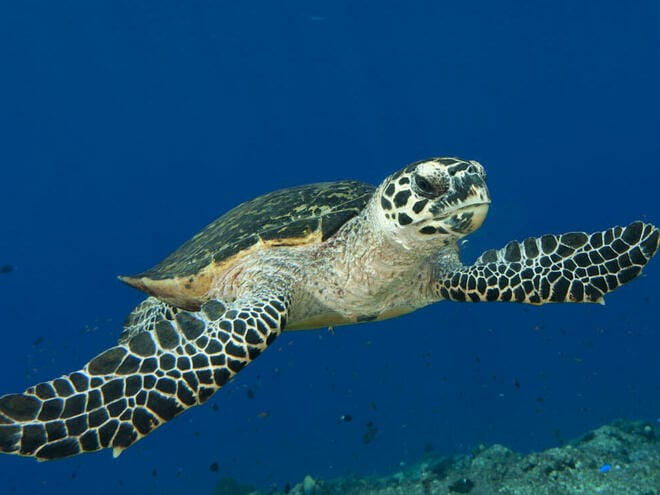

Distribution
They are found in south & south-east shore of Sri Lanka including Kosgoda & Rakawa. But they are also seen very rarely in Sri Lanka. This turtle is found in nearly all the world's temperate and tropical oceans: the Atlantic Ocean from Newfoundland to Argentina, the Indian Ocean from southern Africa to the Arabian Gulf to Western Australia, the Mediterranean Sea, and the Pacific Ocean from Alaska to Chile and Australia to Japan. During winter months loggerhead sea turtles migrate to tropical and subtropical waters

Breeding
Females produce estrogen and small amounts of testosterone, but externally just grow larger. Age at maturity is variable. Mature size is attained between age 10 and 30; captives are predicted to mature in 16 to 17 years. Reproductive life span, after reaching maturity is estimated at about 32 years. These sea turtles breed, on average, every 12 to 17 days during the breeding season. Females will not breed again for another 2 to 4, but possibly up to 9 years. Breeding may occur year-round, but it peaks between May and July.
Just before the nesting season, male loggerhead sea turtles migrate to mating grounds, mostly located offshore from nesting beaches. They wait for females to begin courtship and mating. A male will circle a female, then approach her and bite her neck or shoulder. He will then attempt to mount her and, if she accepts him, they will mate. If a female does not accept the male she covers her cloaca and swims to the bottom, but a persistent male may wait until she needs air and make another attempt. Males use the long, curved claws on their forelimbs to hold on because mating may last for hours and other males often ram and bite the mating male, attempting to dislodge him. If a male is dislodged, another may quickly replace him.
During the nesting season a female may lay several clutches, and will re-mate each time. In some cases, she may mate several times between clutches and so a single clutch may have sperm contributed by several males. Unlike most of other sea turtles, these turtles courtship and mating usually do not take place near the nesting beach, but rather along the migration routes between feeding and breeding grounds.
Human impact & dangers
The main threat to the adult loggerheads lies in shrimp trawls and crab fishing nets, to which many of them annually become victims of it. Furthermore, adults are often injured by speedboat propellers & by swallowing fishing hooks. They are intensively hunted for their meat. Also the eggs are eaten by the humans. The fat is used in cosmetics and medication. They are also killed for their shells. Other important causes of decline of their population include beachfront development, human disturbance of nesting females, pesticides, oil spills & other ocean pollutants. The eggs are also in danger from other predators such as crows, ants, rats, cats, crabs or even dogs.